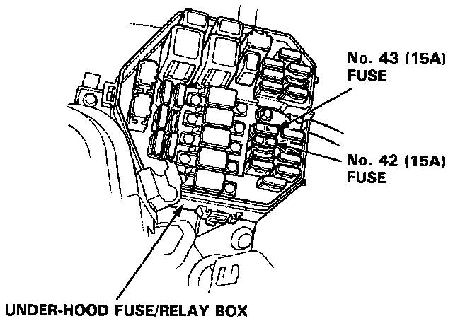
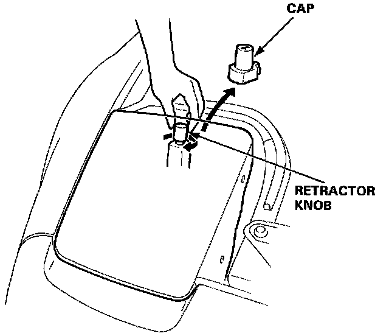
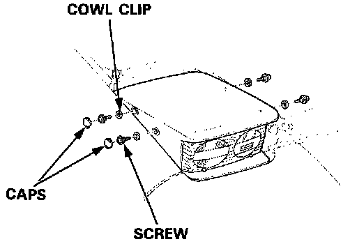
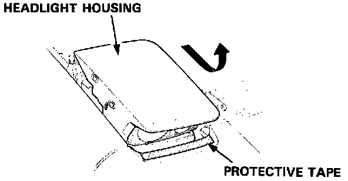
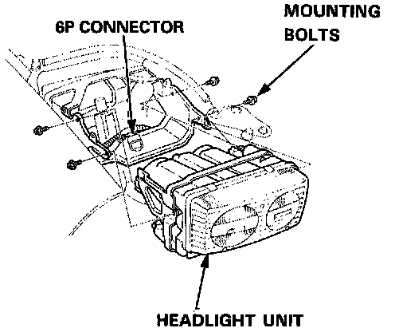

Headlamp: Service and Repair
Headlight ReplacementCAUTION:
^ Halogen headlights can become very hot in use; do not touch them or the attaching hardware immediately after they have been turned OFF.
^ Do not try to replace or clean the headlights with the lights ON.
Headlight Replacement:

1. Remove the No. 42 (15 A) and No. 43 (15 A) fuses from the under-hood fuse/relay box.
Headlight Replacement:

2. Remove the cap, and turn the knob clockwise to raise the headlight.
Headlight Replacement:

3. Remove the two caps, four screws, and cowl clips.
Headlight Replacement:

4. Slide the headlight housing forward and up to remove it. Be careful not to damage the bumper or the housing.
Headlight Replacement:

5. Disconnect the 6P connector from the headlight unit.
6. Remove the four mounting bolts, then remove the headlight unit.
7. After installing the new headlight, adjust both headlights to local requirements.